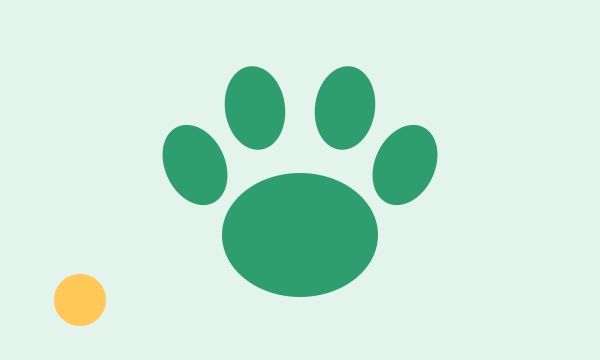
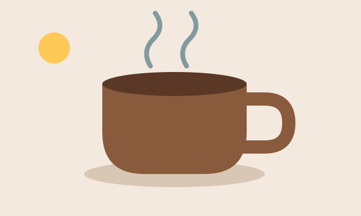
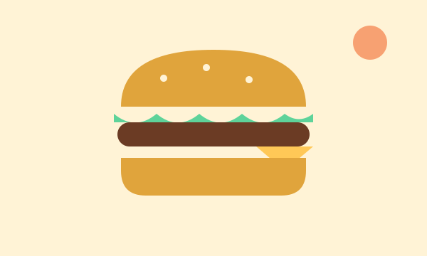
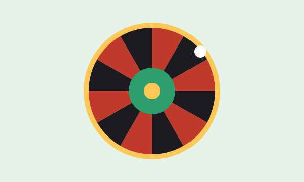
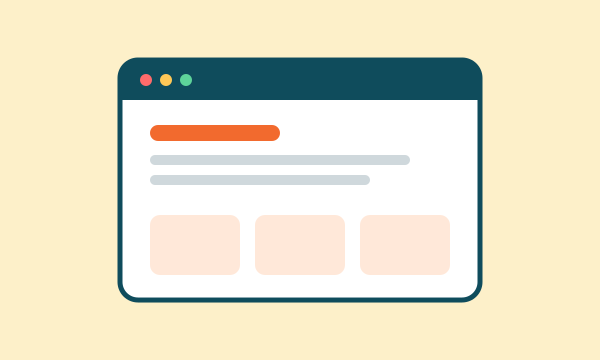

Veterinaria Gestión
Sistema de gestión para una veterinaria hecho en equipo en Java. Trabajo en mi propia rama de Git y subo mi parte con pull requests. Me encargué del módulo de Mascota.
- Java
- IntelliJ
- Git
- GitHub
Trabajos personales, de equipo y de clase. Los que están en mi GitHub tienen enlace.

Sistema de gestión para una veterinaria hecho en equipo en Java. Trabajo en mi propia rama de Git y subo mi parte con pull requests. Me encargué del módulo de Mascota.

Sistema de gestión para una cafetería hecho en Python para practicar módulos, manejo de archivos y lógica de negocio. Maneja el menú, el registro de pedidos, el historial, los roles y los reportes, y guarda los datos en un archivo CSV.

Sistema de pedidos para un restaurante de hamburguesas hecho en Python. Permite elegir combos, bebidas y sabores, calcula el subtotal y el total, muestra el resumen del pedido y valida lo que se escribe.

Juego de ruleta hecho en Java con números del 0 al 36. Permite apostar a un número o a rojo o negro, lleva el saldo de créditos del jugador y muestra el resumen de resultados al final.

El proyecto final de Introducción a los Lenguajes de Internet: varias páginas enlazadas, con HTML, CSS externo y JavaScript, publicado en GitHub Pages.